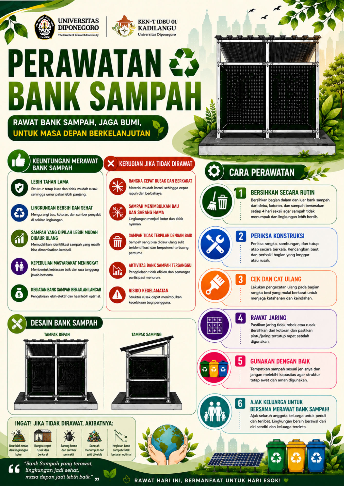
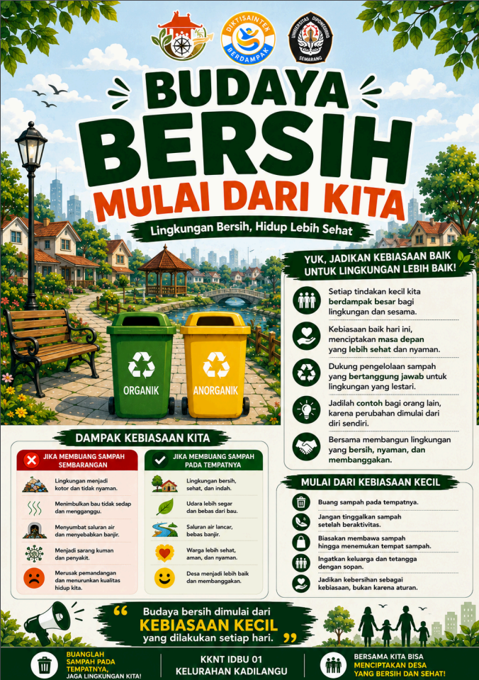
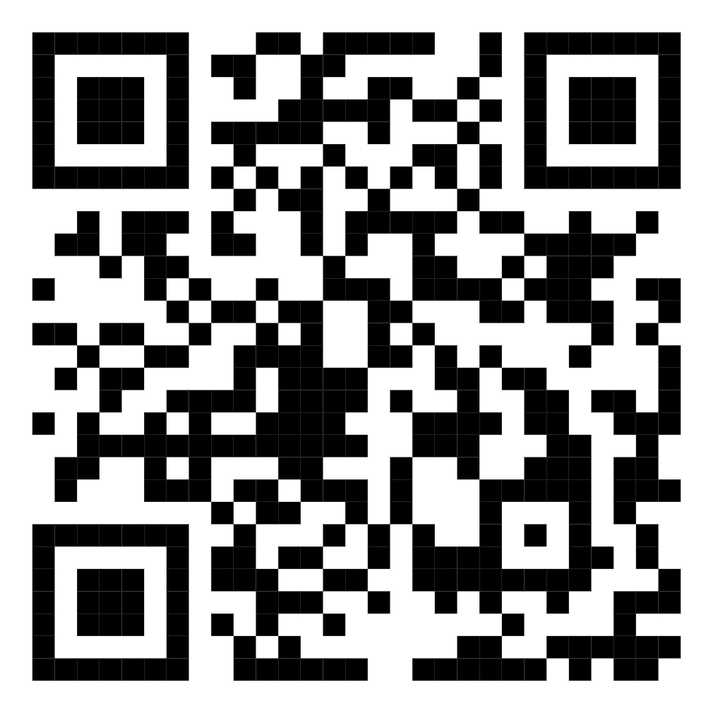
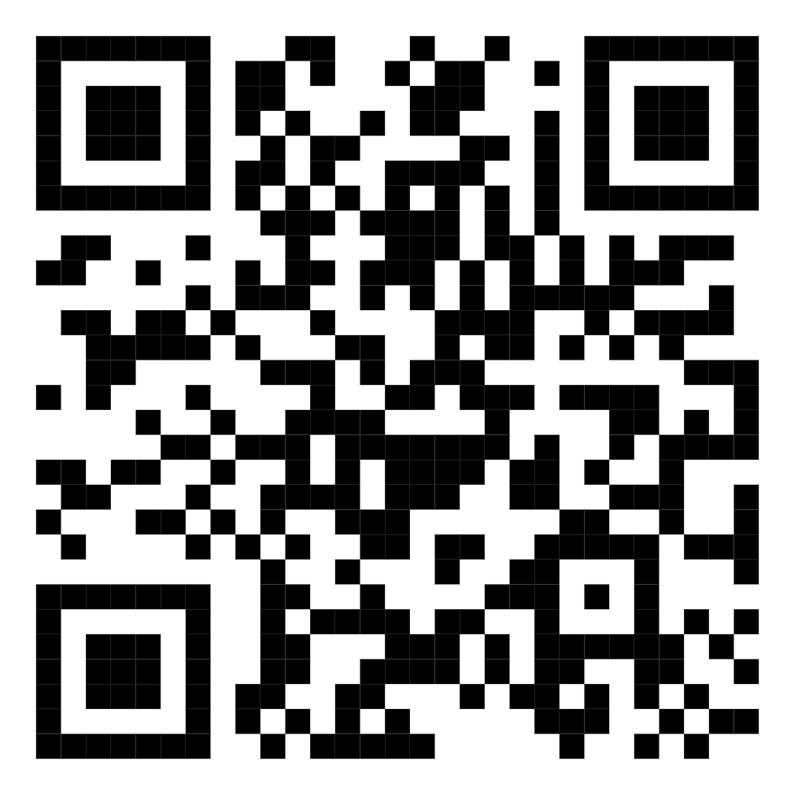

Bank Sampah RW 6
Bank Sampah RW 6
Bank Sampah RW 6
Bank Sampah RW 6
Kelurahan Kadilangu · Kabupaten Demak
"Kelola Sampah, Jaga Lingkungan, Ciptakan Manfaat"
Daftar Isi
Tujuh hal penting seputar Bank Sampah RW 6 — semua ada di sini.
Menampilkan lokasi Bank Sampah RW 6 melalui Google Maps.
Selengkapnya →Prosedur penggunaan Bank Sampah RW 6 langkah demi langkah.
Selengkapnya →Kenali kategori organik dan anorganik.
Selengkapnya →Panduan menjaga kebersihan dan perawatan Bank Sampah.
Selengkapnya →Poster edukasi budaya menjaga lingkungan.
Selengkapnya →Foto proses pembuatan Bank Sampah RW 6.
Selengkapnya →Tentang
Website ini dibuat sebagai media informasi digital Bank Sampah RW 6 Kelurahan Kadilangu. Melalui website ini, warga dapat memperoleh informasi mengenai lokasi, panduan pembentukan, tata cara perawatan, serta edukasi budaya peduli lingkungan — kapan saja, cukup lewat ponsel.
📍 Lokasi
Lokasi Bank Sampah RW 6 Kelurahan Kadilangu, Kabupaten Demak.
📋 SOP
Langkah-langkah menggunakan Bank Sampah RW 6 untuk warga sekitar.
Pisahkan sampah organik dan anorganik sebelum dibawa ke Bank Sampah.
Antarkan sampah ke titik Bank Sampah RW 6 sesuai jam operasional.
Taruh di wadah organik atau anorganik yang sudah disediakan.
Pastikan area tetap rapi dan bersih setelah membuang sampah.
🗂️ Fitur Khusus RW 6
Kenali dulu jenisnya sebelum dipilah — biar pengelolaan sampah di RW 6 lebih rapi.
Bisa dikompos jadi pupuk.
Sampah kebun, mudah terurai.
Cocok buat kompos rumahan.
Bisa jadi pupuk atau penyerap bau.
Dipilah dulu sebelum didaur ulang.
Dilipat rapi biar hemat tempat.
Dipisah dari sampah basah.
Bungkus dulu biar aman dibawa.
🧹 Perawatan
Rutinitas sederhana supaya Bank Sampah tetap rapi dan nyaman digunakan warga.

Membersihkan area Bank Sampah secara rutin.
Memilah sampah sesuai jenisnya sebelum disimpan.
Melakukan pengecekan kondisi tempat dan kebersihan lingkungan.
🌿 Budaya

Taruh file poster kamu di assets/poster-budaya.jpg
Poster edukasi mengenai pentingnya menjaga kebersihan lingkungan dan membuang sampah pada tempatnya.
🏗️ Proses
Rekam jejak proses pembentukan Bank Sampah RW 6 dari awal sampai berjalan.
📱 Akses Cepat
Scan QR Code di bawah untuk membuka Website Informasi Bank Sampah RW 6 atau melihat lokasi Bank Sampah melalui Google Maps.

Website Bank Sampah

Lokasi Bank Sampah